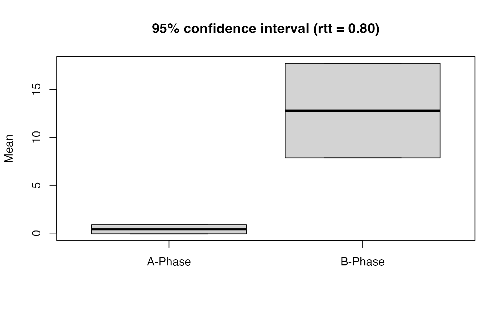

The rci() function computes three indices of reliable change (Wise, 2004)
and corresponding descriptive statistics.
Usage
rci(data, dvar, pvar, rel, ci = 0.95, graph = FALSE, phases = c(1, 2))Arguments
- data
A single-case data frame. See
scdf()to learn about this format.- dvar
Character string with the name of the dependent variable. Defaults to the attributes in the scdf file.
- pvar
Character string with the name of the phase variable. Defaults to the attributes in the scdf file.
- rel
Reliability of the measure, used to compute the standard error.
- ci
Width of confidence interval as a decimal. Default is
ci = 0.95applying a 95 percent confidence interval.- graph
If set
TRUE, a box plot of phase A and B scores is displayed.graph = FALSEby default.- phases
A vector of two characters or numbers indicating the two phases that should be compared. E.g.,
phases = c("A","C")orphases = c(2,4)for comparing the second to the fourth phase. Phases could be combined by providing a list with two elements. E.g.,phases = list(A = c(1,3), B = c(2,4))will compare phases 1 and 3 (as A) against 2 and 4 (as B). Default isphases = c(1,2).
References
Christensen, L., & Mendoza, J. L. (1986). A method of assessing change in a single subject: An alteration of the RC index. Behavior Therapy, 17, 305-308.
Hageman, W. J. J., & Arrindell, W. A. (1993). A further refinement of the reliable change (RC) index by improving the pre-post difference score: Introducing RCID. Behaviour Research and Therapy, 31, 693-700.
Jacobson, N. S., & Truax, P. (1991). Clinical Significance: A statistical approach to defining meaningful change in psychotherapy research. Journal of Consulting and Clinical Psychology, 59, 12-19.
Wise, E. A. (2004). Methods for analyzing psychotherapy outcomes: A review of clinical significance, reliable change, and recommendations for future directions. Journal of Personality Assessment, 82, 50 - 59.
Examples
## Report the RCIs of the first case from the byHeart data and include a graph
rci(byHeart2011[1], graph = TRUE, rel = 0.8)

#> Reliable Change Index
#>
#> Mean Difference = 12.4
#> Standardized Difference = 1.69056
#>
#> Descriptives:
#> n mean SD SE
#> A-Phase 5 0.4 0.5477226 0.244949
#> B-Phase 15 12.8 5.6340800 2.519637
#>
#> Reliability = 0.8
#>
#> 95 % Confidence Intervals:
#> Lower Upper
#> A-Phase -0.08009117 0.8800912
#> B-Phase 7.86160191 17.7383981
#>
#> Reliable Change Indices:
#> RCI
#> Jacobson et al. 50.62279
#> Christensen and Mendoza 35.79572
#> Hageman and Arrindell 17.92417
#>